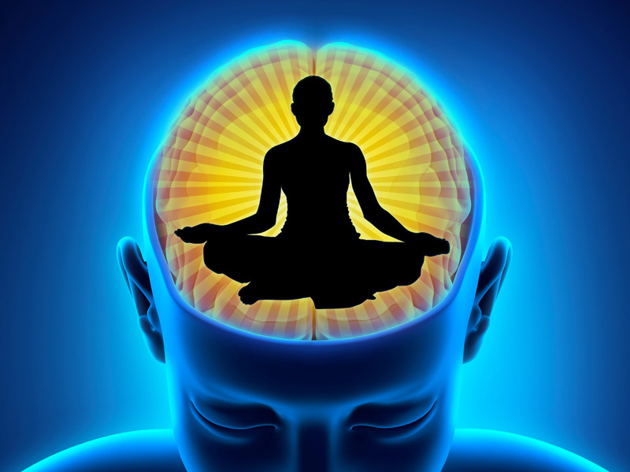

October 12, 2024 by June Douglas
The workings of the mind are fascinating, shaping our world in either positive or negative ways.
A positive mindset can be a blessing, filling a person’s thoughts with hope and optimism.
People with such a mindset are able to approach both good and bad situations in a constructive manner.
Even when faced with setbacks, they bounce back quickly, continuing to see the silver lining.
On the flip side, a negative mindset can feel like a curse.

These individuals are plagued by dark, pessimistic thoughts, often viewing life through a lens of despair.
Their thinking spirals downward, sometimes to the point where they feel trapped in their own minds.
This mental darkness can eat away at their conscience, leading some to feel so overwhelmed that they consider ending everything to escape it. In other cases, this negativity is unleashed onto others, projecting pain outward.
The mind can be a sanctuary for some and a prison for others.
Those fortunate enough to have a positive outlook use their mental strength to navigate life’s challenges, but those burdened by negativity may feel consumed by their own thoughts.
This is why it is crucial to nourish the mind—whether through self-reflection, seeking help, or finding outlets to channel dark thoughts.
A resilient mind can be the key to overcoming life's struggles.
Life
September 30, 2023 by June Douglas
The way reality functions has created deep divisions among people.
Can we truly say that individuals aren't just living in their own personal worlds, shaped by their beliefs?
People build their lives around what they accept as "right" and "true," defining their version of reality based on those ideas.
But what does it really mean for something to be correct or true? Could it be that these concepts of reality are nothing more than illusions?
As Itachi Uchiha from Naruto said, people accept only what they believe is acceptable. This creates a restrictive environment where people hesitate to voice their true opinions, fearing they will be seen as wrong.
Society has become difficult to satisfy. If someone works as a garbage collector or a construction worker, their job is often dismissed as "not respectable."
The belief is: if you don't have a job, you're lazy, and if you do have one but it's not white-collar, it's still not good enough. These rigid societal standards form barriers between people.
These barriers come in different forms—rich versus poor, attractive versus unattractive, blue-collar versus white-collar jobs—all dividing and defining our interactions.
Life has a unique way of teaching us through experience.
"Sometimes you must hurt in order to know, fall in order to grow, lose in order to gain, because life's greatest lessons are learned through pain," as Nagato, a character from Naruto, wisely expressed.
Unless we live through certain events, we cannot truly understand them. For instance, no one knows the depth of starvation until they’ve felt hunger themselves.
Likewise, the pain of abuse, the struggles of blindness—these are things people can only truly comprehend by experiencing them.
It’s through personal trials that real understanding is born. When a child falls, they either get up and brush themselves off or cry.
Some people spend their entire lives suffering in their minds, while others turn their pain into motivation to pursue their goals.
And then there are those who prefer to blame their suffering on external factors. That is how many of us behave—responding differently to life's challenges.
True happiness often comes to those who have learned from their life lessons, those who have turned pain into growth and wisdom.